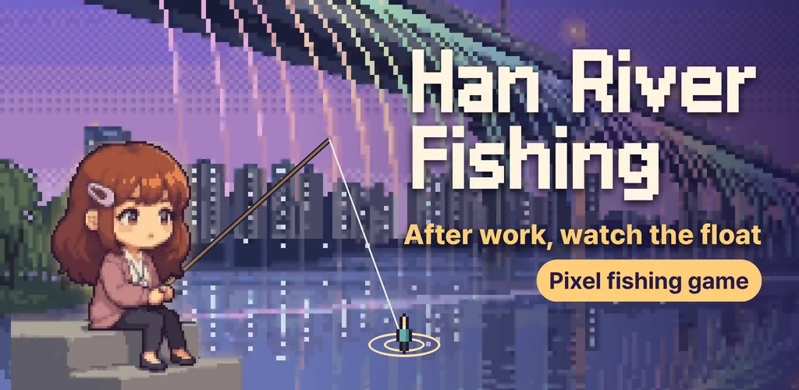
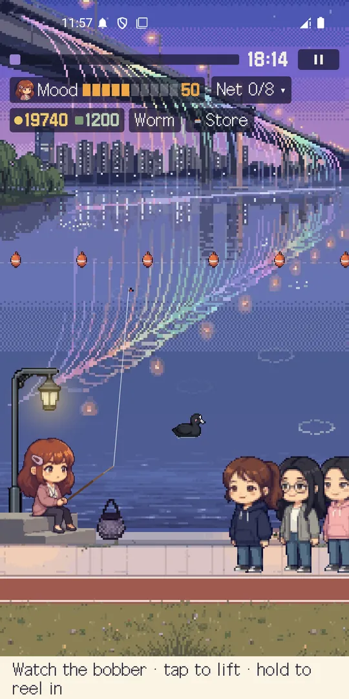
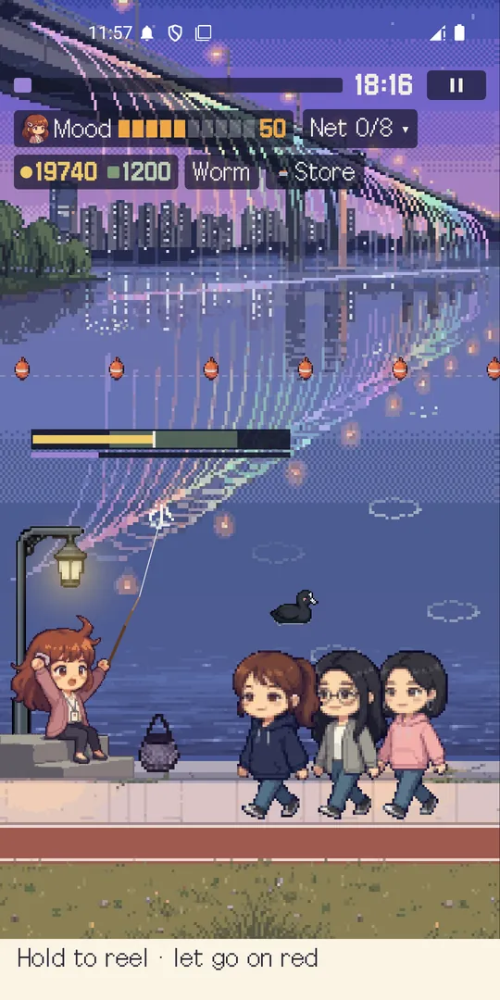
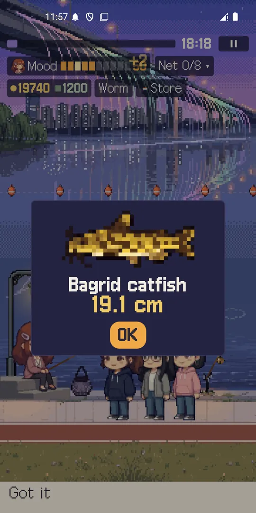
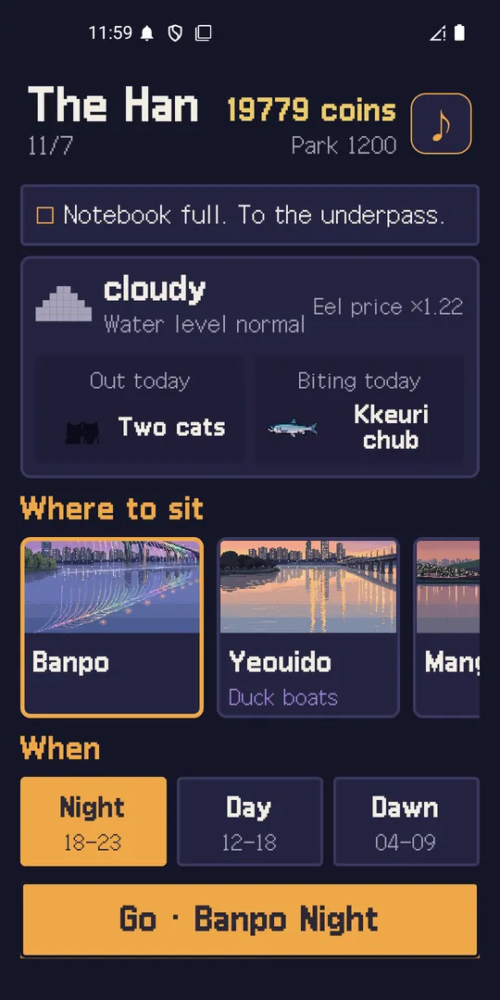
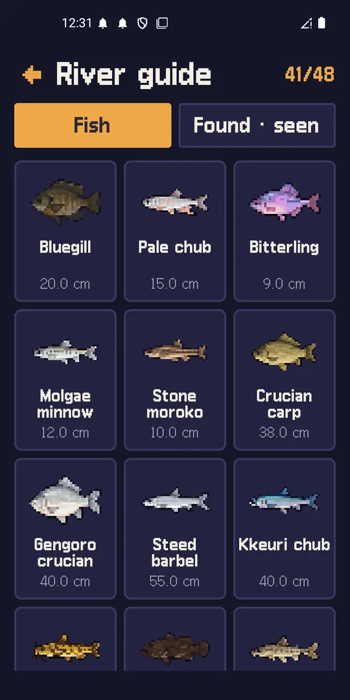
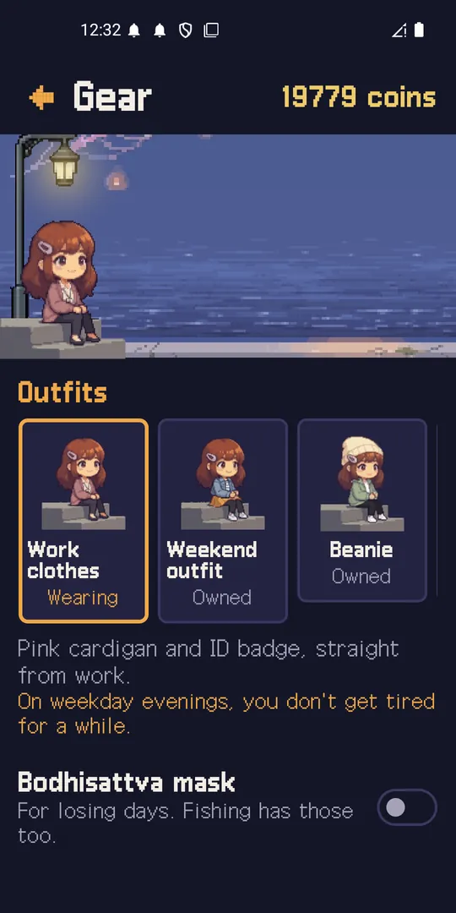

Han River Fishing: Cozy Pixel
Cozy pixel fishing game, offline. Watch the float by the river after work.







About this app
Sit by the river after work and watch your float. Han River Fishing is a cozy fishing game with float fishing at its heart: pixel crucian carp and freshwater fish, a quiet night riverbank, and a few minutes per round. It is a fishing game offline, so no connection is needed.
More people than fish
Along this river there are more people than fish. Joggers pass by, a cycling pack rolls through in a line, an uncle with a soju bottle strikes up a chat, and a park ranger walks over with a flashlight. Your partner and friends sit down next to you. Every visitor changes your mood, and your mood widens or narrows the window for setting the hook. Quiet rounds are the default and people drop by now and then. You decide how to answer each one.
Read the float
Aim at a shimmer under the surface, then read the float: every species signals differently. Set up to three rods, and fish with a bell at night. Switch baits. The first round shows a "Now!" label so you never guess.
Six spots and a hidden underpass
Bike east along the river from Banpo through Yeouido, Mangwon, Yanghwa, and Ttukseom to Jamsil. Each spot brings different people and fish. Fill the notebook and a spot missing from the map opens.
Collect and grow
- A 24-species fish journal that lights up as you catch
- Permanent gear upgrades with no loot boxes
- 17 riverside regulars plus animal visitors, each story told over eight meetings
- Five outfits for Sodam and a shareable snapshot card of your catch
- A notebook left behind by the previous tenant
Good for
- Quick unwinding after work
- Fans of pixel art and gentle music
- Anyone who likes float fishing
There are no in-app purchases, gacha, energy, or servers, and the fishing screen shows no ads. An interstitial ad can appear when you head out to start a round, banners appear on menu screens, and an optional rewarded ad plays only when you tap it. Ads use Google AdMob, and in regions that require it you see a consent message first. Notifications are optional: if you allow them you get one "Today at the river" reminder a day.
All characters and stories are fictional. This is a game for fun, not a fishing guide.
Android · free with ads · Developer: RealTunaLove · Store listing in 17 languages